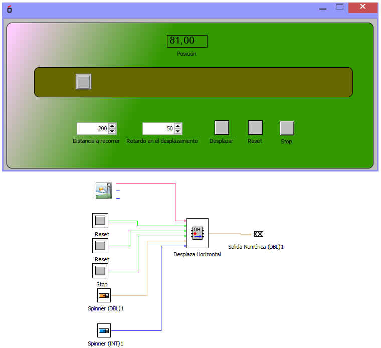

Este bloque permite desplazar una imagen a lo largo de un recorrido que dependea del tamaño del area canvas del bloque.
Las entradas son:
Imagen: Imagen que desplazaremos.
Star: Señal que mediente un imulso pone en movimeinto la imagen
Reset: Vulve la imagen a la posicion de incio.
Stop: Detiene el movimiento.
Distancia: Distacia a recorrer.
Velocidad: Indica el retardo en el movimiento
La salida es Posición que indica mediente un valor numeroco de tipo dbl la posición instantánea del objeto.
Ejemplo de montaje:
